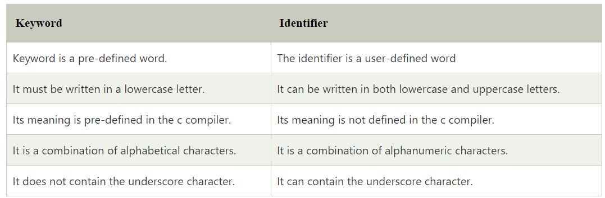

C Identifiers
C identifiers represent the name in the C program, for example, variables, functions, arrays, structures, unions, labels, etc. An identifier can be composed of letters such as uppercase, lowercase letters, underscore, digits, but the starting letter should be either an alphabet or an underscore. If the identifier is not used in the external linkage, then it is called as an internal identifier. If the identifier is used in the external linkage, then it is called as an external identifier.
We can say that an identifier is a collection of alphanumeric characters that begins either with an alphabetical character or an underscore, which are used to represent various programming elements such as variables, functions, arrays, structures, unions, labels, etc. There are 52 alphabetical characters (uppercase and lowercase), underscore character, and ten numerical digits (0-9) that represent the identifiers. There is a total of 63 alphanumerical characters that represent the identifiers.
Rules for constructing C identifiers
- The first character of an identifier should be either an alphabet or an underscore, and then it can be followed by any of the character, digit, or underscore.
- It should not begin with any numerical digit.
- In identifiers, both uppercase and lowercase letters are distinct. Therefore, we can say that identifiers are case sensitive.
- Commas or blank spaces cannot be specified within an identifier.
- Keywords cannot be represented as an identifier.
- The length of the identifiers should not be more than 31 characters.
- Identifiers should be written in such a way that it is meaningful, short, and easy to read.
total, sum, average, _m _, sum_1, etc.Example of invalid identifiers
2sum (starts with a numerical digit) int (reserved word) char (reserved word) m+n (special character, i.e., '+')
Types of identifiers
- Internal identifier
- External identifier
Internal Identifier
If the identifier is not used in the external linkage, then it is known as an internal identifier. The internal identifiers can be local variables.
External Identifier
If the identifier is used in the external linkage, then it is known as an external identifier. The external identifiers can be function names, global variables.
Differences between Keyword and Identifier
Let's understand through an example.
int main()
{
int a=10;
int A=20;
printf("Value of a is : %d",a);
printf("\nValue of A is :%d",A);
return 0;
}
Output
Value of a is : 10 Value of A is :20
The above output shows that the values of both the variables, 'a' and 'A' are different. Therefore, we conclude that the identifiers are case sensitive.